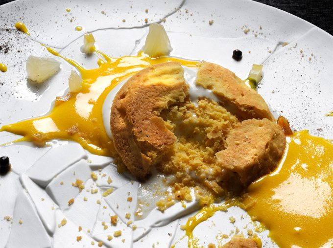

Disolver el azúcar en el agua caliente, añadir las hojas de gelatina hidratadas y secadas en papel. Cuando enfríe a 30º C, añadir el agua de azahar y mezclar. Repartir en dos vasos de Rowzer y congelar. Pasar por Rowzer (procesador de texturas heladas) en tres dosis, esto debe realizarse cinco minutos antes de emplatar.
Hervir el agua y añadir los dátiles, retirar el agua y poner los dátiles a fuego alto e ir mojando con el agua escurrida anteriormente. Cuando el dátil absorba toda el agua y tome color dorado, triturar y colar por un colador fino. Reservar en una manga pastelera.
Triturar la mantequilla en pomada con los dátiles, debe quedar una crema color dorado y uniforme. Reservar. Montar los huevos al baño maría sin que superen los 60º C, cuando estén montados añadir la mantequilla de dátil y mezclar con movimientos envolventes. Rellenar el molde y hornear a 150º C durante 40 minutos. Desmoldar y reservar en dados de 1’5 centímetros de lado.
Poner el mosto en un cazo y colocar al fuego hasta que reduzca. Cuando llegue a 145 gramos, retirar del fuego y reservar a temperatura ambiente.
Triturar las almendras con el agua y pasar por superbag. Texturizar la leche con la xantana y reservar en un biberón.
Colocar cinco dados de bizcocho haciendo una cruz con el centro, añadir la leche de almendras haciendo una base. Colocar cuatro puntos de crema de dátil entre los bizcochos, encima la quenelle (cuatro quenelles en los puntos y una en el bizcocho del centro). Añadir unas gotas de aceite de almendras y cuatro flores de jazmín. Delante del cliente servir el arrope.
Amasar todos los ingredientes menos la levadura, ésta se añade al final. Sólo si fuera estrictamente necesario, añadir también el agua. La masa resultante debe quedar bien trabajada y homogénea. Dejar reposar durante 10 minutos. Cortar la masa en porciones de 180 gramos y bolear y reposar 5 minutos. Por último, estirar para meter en los moldes rectangulares previamente untados con mantequilla y harina para evitar que se peguen. Filmar los moldes uno a uno y dejar fermentar. Tienen que doblar su volumen. Poner el horno a 180° C, quitar el film de los moldes y hornear durante 15 minutos. Para el migajón, quitar la corteza y cortar rebanadas de unos 3 cm de ancho. Cuadrar las rebanadas.
Mezclar todos los ingredientes en frío. Meter las rebanadas de brioche por lo menos 6 horas antes de su utilización para que queden esponjosas.
Hervir todos los ingredientes a excepción de la segunda cantidad de azúcar, las yemas y el café. Mezclar con varilla las yemas y el azúcar. Poner el extracto de café en un bol que irá sobre un baño frío. Escaldar la mezcla de yemas con el azúcar. Volver a poner a fuego flojo y llevar hasta 83° C con un termómetro sin parar de mover. Verter sobre el bol que está con el café en el baño frío. Una vez enfriado, verter sobre un vaso de Pacojet y congelar.
Hervir durante tres minutos el agua con la nata y el azúcar. Mezclar el café con el cacao en polvo y acto seguido verter sobre la mezcla los líquidos que hemos hervido previamente. Mezclar bien con una varilla y pasar por el chino fino. Añadir un par de cucharadas de pasta de avellanas, triturar con la batidora de mano eléctrica y volver a pasar por el chino fino. Reservar en biberones.
Mezclar todos los ingredientes con una espátula y meter en cámara para que coja un poco de cuerpo. Con ayuda de una espátula de codo, estirar muy fino sobre un silpat y cocer durante 7 minutos a 170° C.
En una sartén antiadherente poner un poco de mantequilla clarificada y calentar hasta que se tueste un poco. Sacar el migajón del empape y secar. Añadir un poco de azúcar y caramelizar por todas sus caras y reservar. Depositar en la base de un plato hondo un poco de salsa de chocolate, colocar el migajón encima y sobre éste colocar una quenelle de helado. Acabar con una teja de chocolate sobre el helado.
Con el curioso nombre de ¡Ups! Se me ha caído la tarta de limón, el cocinero italiano Massimo Bottura salvó un postre que tuvo un accidente antes de ser servido. El accidente lo tuvo su chef pastelero Taka, que llevando dos tartas iguales en sus manos, vio como una se resbaló y cayó sobre la encimera de la cocina. Cuentan que para poder salvar y presentar el postre, tuvieron que romper la tarta que estaba entera.
Procesar los ingredientes en una Thermomix y llevarlos a 85º C a velocidad máxima. Cuando se alcance la temperatura, remover y colar el líquido. Dejar enfriar en un bol con hielo. Congelar en un recipiente Pacojet y procesar el sorbete justo antes de servir.
En bol, amasar la mantequilla fría y el azúcar glas a mano. Añadir la yema de huevo y la harina y amasar bien hasta que quede suave. Dejar reposar la masa durante dos horas en la nevera. Precaliente el horno a 160º C. Estirar la masa sobre una bandeja para hornear de silicona hasta lograr 2 milimetros de espesor. Utilice los moldes de tartaleta para obtener la forma. Hornear durante ocho minutos o hasta que la masa esté bien cocida y adquiera un dorado pálido-marrón.
Poner a hervir agua en una olla y escaldar la menta durante 10 segundos y pasar a un baño maría inverso. Con la ayuda de la Thermomix, mezclar con los demás ingredientes asegurándose de que la temperatura no supera 35º C. Pasar por un colador fino y reservar.
Batir la yema de huevo y el azúcar en un recipiente resistente al calor. Cuando el azúcar se haya disuelto, colocar el recipiente sobre una olla de agua hirviendo sin dejar que toque el agua (baño maría). Continuar batiendo vigorosamente. Cuando los huevos empiecen a tomar consistencia y antes de que comiencen a espesar, añadir el zumo de limón y el limoncello gradualmente, vertiendo muy lentamente sin dejar de batir enérgicamente. Cuando adquiera una textura espumosa y cremosa, el sabayón está listo para ser servido.
Para servir el postre, salpicar el plato con el sabayón y hacer unos puntos alrededor con la salsa de menta. Colocar una quenelle de helado de hierba de limón en el centro, a continuación la corteza de la tarta, en la parte superior del helado, y aplastar suavemente. Decorar el plato con los ingredientes del acabado.